Start
Recept
Skicka in ditt recept
Om oss
Tips & Tricks
Alla recept
Laktosfria recept
Proteinrika recept
Recept under 20 minuter
Klassisk vaniljglass
Kaffeglass
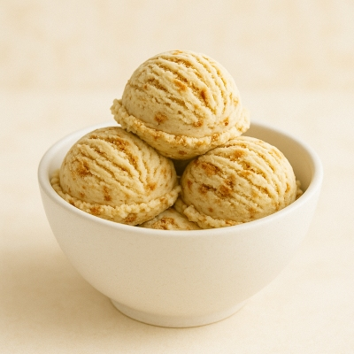
Kanelbulleglass
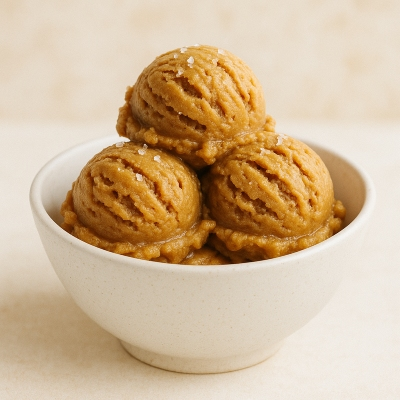
Saltkaramellglass
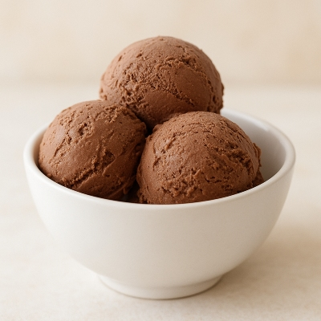
Chokladglass
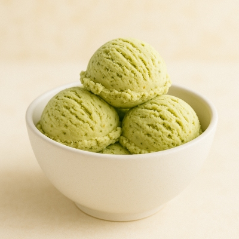
Pistageglass
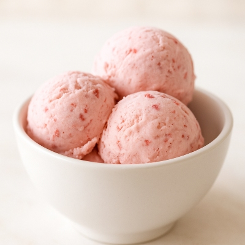
Jordgubbsglass
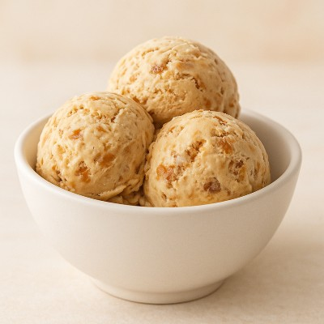
Daimglass
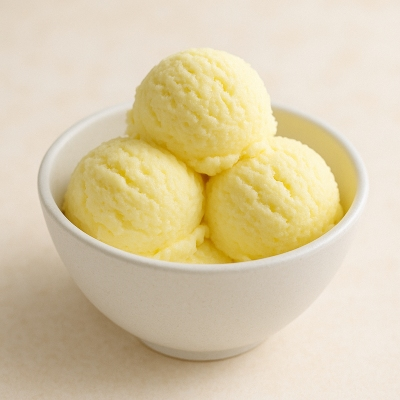
Citronsorbet
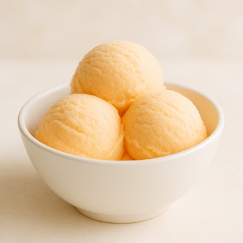
Mangosorbet
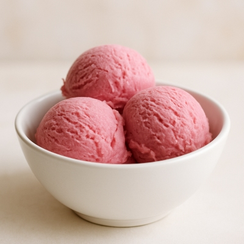
Hallonsorbet
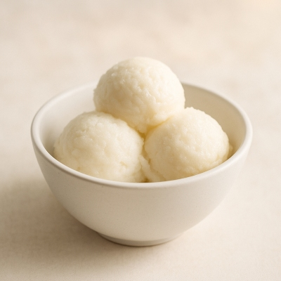
Flädersorbet
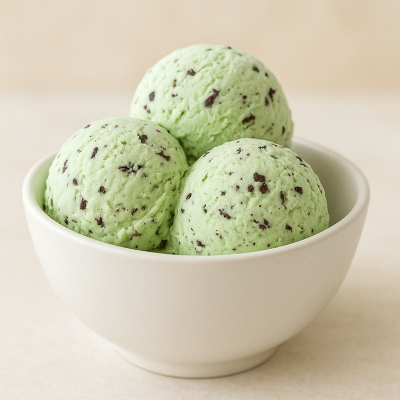
Mintchokladglass
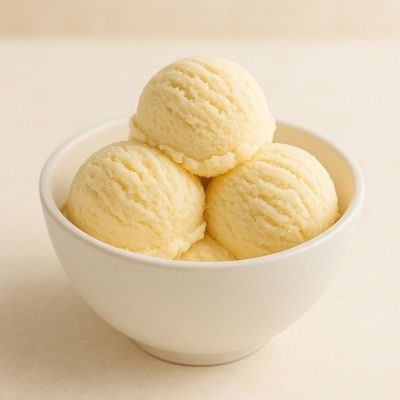
Banan och vaniljglass
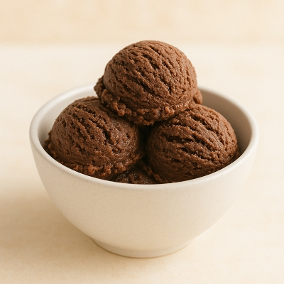
Kladdkakeglass
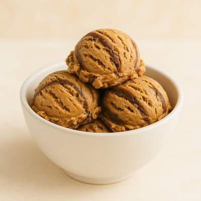
Choklad och jordnötssmörsglass
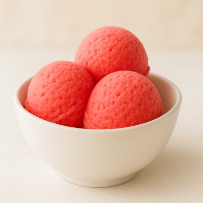
Vattenmelon sorbet
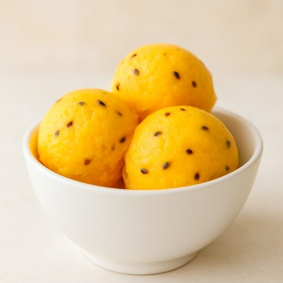
Passion sorbet
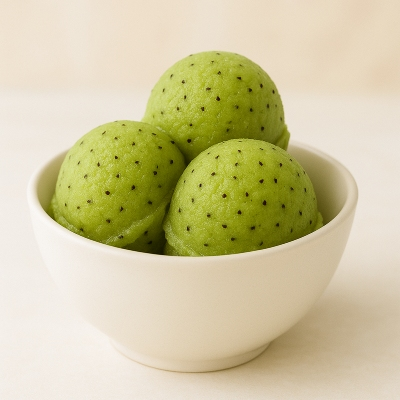
Kiwi sorbet
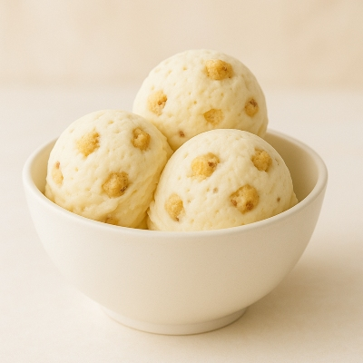
Kakdegglass
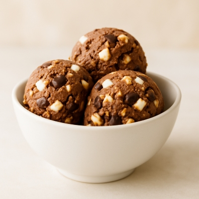
Rockyroadglass
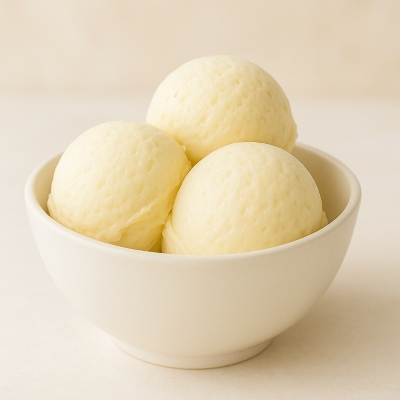
Vitchokladglass
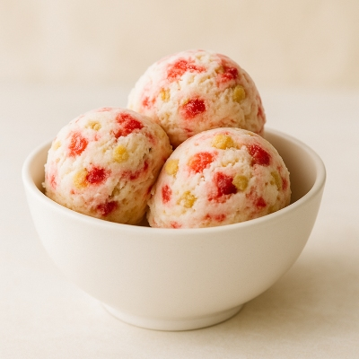
Jordgubbcheesecakeglass
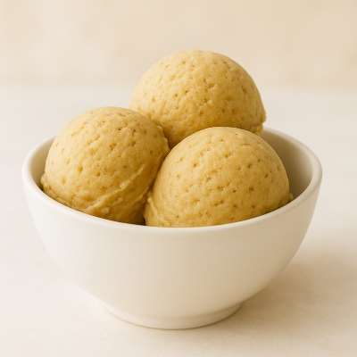
Banoffeeglass
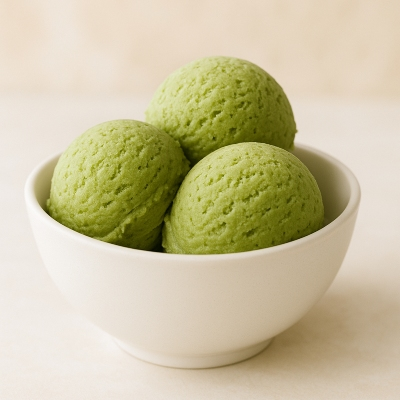
Matchaglass
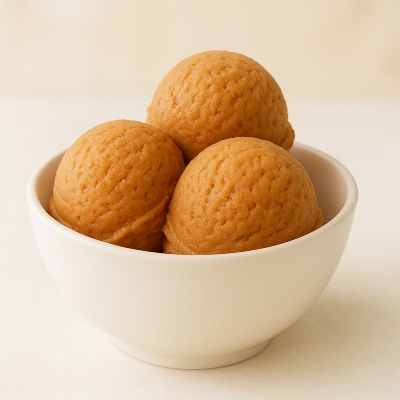
Dumleglass
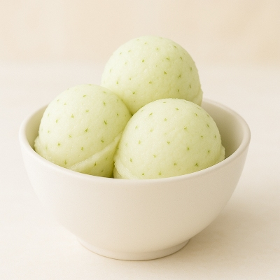
Limesorbet
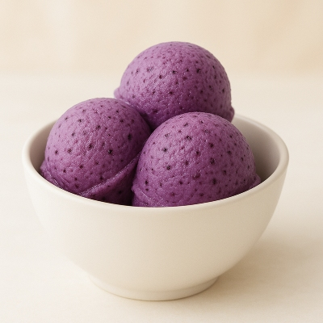
Blåbärsglass